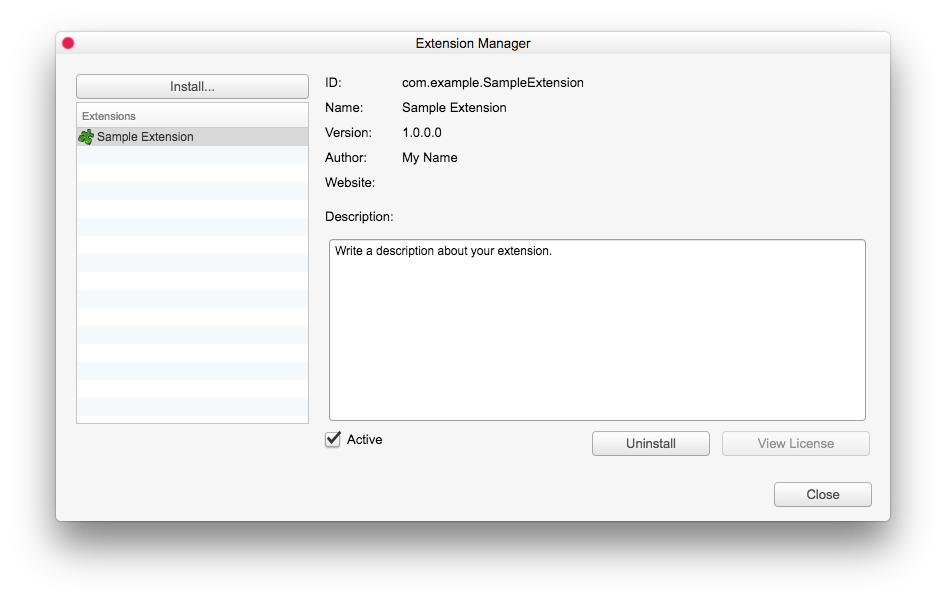

扩展管理器
Visual Novel Maker 提供了一个强大的扩展系统，允许用户向编辑器和游戏引擎添加新功能。扩展可以使用扩展管理器轻松安装/卸载。由于扩展可能会对编辑器或游戏引擎进行重大更改，因此强烈建议在安装扩展之前备份项目。
安装扩展
您可以通过菜单“工具”>“扩展管理器”打开扩展管理器。

要安装扩展，只需单击“安装”按钮并选择要安装的扩展文件（*.zip）。确认您确实要安装该扩展，并阅读并接受该扩展的许可证协议（如果有）。扩展成功安装后，它将出现在“Extensions”（扩展）列表中。
如果您选择一个扩展，您可以看到以下信息。
ID -该扩展的唯一标识符。这是技术原因，用于独立于扩展名称唯一识别每个扩展和开发人员。
Organization- 您的公司或组织的名称。
Name- 扩展的名称。
Version- 扩展的版本。查看开发人员网站，看看是否有更新的版本可用。
Author- 扩展的作者/开发人员。
Website- 作者/开发人员的网站。通常您可以在那里找到有关扩展的更多信息。
Description- 包含有关扩展功能的更详细描述，它向编辑器和/或游戏引擎添加了哪些功能等。
您可以单击“查看许可证”按钮来查看扩展的许可证/条款和条件。
激活/停用扩展
安装的扩展可以随时通过取消选中“Active”（活动）复选框来停用。如果您停用扩展，则对编辑器和游戏引擎的所有更改都会被删除，扩展不再影响编辑器/游戏。但资源不会被删除，扩展仍然已安装，并且可以随时重新激活。建议在停用/激活扩展后重新启动 Visual Novel Maker。
卸载扩展
要卸载扩展，只需单击“Uninstall”（卸载）按钮并确认您确实要卸载该扩展。卸载扩展会删除整个扩展及其所有已安装的数据，甚至删除用户创建的所有特定于扩展的内容。因此，如果您卸载了一个添加了新数据库类别的扩展，您创建的所有记录也将被删除。建议在卸载扩展后重新启动 Visual Novel Maker。